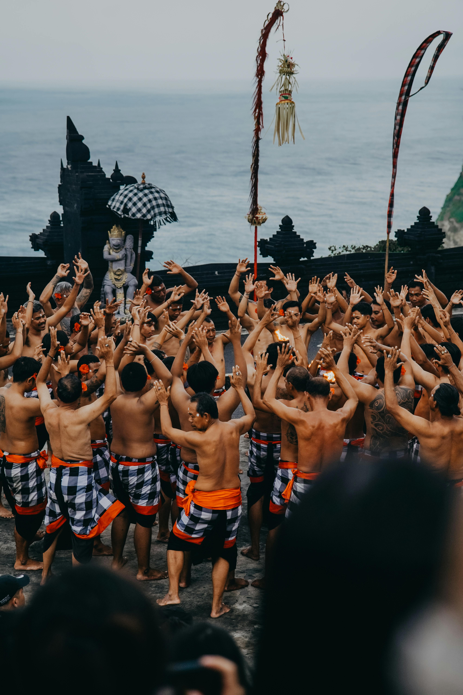

Welcome to Indonesia
A land of breathtaking landscapes, rich traditions, and warm hospitality, where the majestic Borobudur stands tall, a testament to the ingenuity and craftsmanship of the ancient Javanese.
The Culture
Indonesia boasts a diverse cultural tapestry with over 1,300 ethnic groups, each contributing to the nation's vibrant heritage.

Breathtaking Destinations
From the sacred Borobudur temple to the paradise islands of Raja Ampat, Indonesia is home to many ancient wonders.
